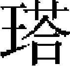

月里麻思 塔不已兒重喜 怯怯里相兀速 孛罕忽都 苫徹拔都兒 哈八兒秃察罕 阿兒思蘭阿散真 失剌拔都兒 口兒吉 阿老瓦丁亦思馬因 失里伯 拜延 坤都岱烏克岱 合剌江［一］ 勗實帶 只兒哈郎秃魯不花 咬住哥
月里麻思，乃蠻氏。太宗命爲斷事官忽都虎之副，又同阿朮魯充達魯花赤，破宿州。太宗十三年，使於宋，從行者七十餘人，月里麻思語之曰：「吾與汝等奉命南下。楚人多詐，倘遇害，當死，毋辱君命也。」已而抵淮上，宋將以兵脅之曰：「爾命在我，生死頃刻間耳。若能降，官爵可立致。不然，必不汝貸。」月里麻思曰：「吾持節南來，以通國好，反誘我以不義，有死而已！」言辭慷慨，不少屈。宋將知其不可逼，乃囚之長沙飛虎寨二十六年而死。世祖深悼之，詔復其家，以子忽都哈思爲答剌罕。忽都哈思自陳於帝曰：「臣願爲國效命，爲父雪恥。」帝嘉納之，授以均州監戰上萬户。十八年，以招討使將兵征日本，戰没。
塔不已兒，束吕糺氏。太宗時，以招討使將兵破信安、河南，授金虎符、征行萬户，以疾卒。子脱察剌襲職。憲宗九年，伐宋，破十字寨，命其子重喜從行。
重喜與宋兵戰於洋隘口，奪戰艦一，流矢中左足，勇氣愈倍。時世祖駐蹕口北，親勞之曰：「汝年幼，能宣力如是，深可嘉尚，然繼今尤當勉之。」
及脱察剌卒，以重喜襲職。中統三年，從征李璮有功。四年，率所部鎮莒州。至元二年，築十字路城，以重喜爲游擊軍。四年，從抄不花伐宋，至泗州北古城。時蔡千户爲宋兵所圍，重喜救出之。五年，入覲，賜白金、納失失段及金鞍、弓矢等。十一年，宋兵圍正陽，敗之。十二年，從下漣、海諸城，别領五千人徑至衡陽店，與宋將李提轄等戰，大敗之，遂進駐瓜洲。十三年夏六月，宋都統姜才來攻，敗之。又從敗李庭芝等於泰州。十四年，進昭勇大將軍、婺州路總管府達魯花赤，佩已降虎符。未幾卒。子慶孫襲職。初授宣武將軍、管軍總管，鎮守安樂州。十六年，移戍鎮江府。十八年，還鎮通州。二十年，進明威將軍。二十二年，移鎮十字路。二十四年，領諸翼軍鎮太湖，教習水戰。二十九年，從征爪哇，擢昭勇大將軍、征行上萬户。將行，詔留之。皇慶二年，卒。子孛蘭奚襲。
怯怯里，斡耳那氏。以千户從闊出攻安豐、壽州。又從諸王塔察兒率蒙古軍二千攻荆山，破之，賜馬二匹。與萬户納 以兵略漣海，又從元帥懷都攻襄陽，卒。
以兵略漣海，又從元帥懷都攻襄陽，卒。
子相兀速襲父職。至元十三年，率本部兵從丞相伯顔渡淮，别將千騎攻淮安南門，破之。又從元帥博羅罕築灣頭堡。萬户納兒卧疾，令相兀速權領蒙古、女真、漢人三萬户。宋揚州都統姜才引兵來寇，相兀速逆戰有功。又從丞相阿朮襲制置使李庭芝及姜才於泰州。皆獲之。十四年，加宣武將軍、管軍總管。十八年，爲蒙古侍衛親軍總管。二十三年，改千户。三十年，擢蒙古侍衛親軍副指揮使司事，易金虎符，加顯武將軍。子捏古，元貞元年爲蒙古侍衛親軍百户。大德六年，襲父職，佩金虎符，授宣武將軍。延祐四年，遷左翊蒙古侍衛親軍都指揮使，仍所佩符，進懷遠大將軍，卒。
孛罕，兀魯帶氏。事太祖，備宿衛。太宗時，領蒙古、漢軍從攻河中府、潼關及河南諸州縣，與拜只思、札忽帶、阿思蘭攻秦、鞏及仁和諸堡，又與拜只思共守長安。太宗七年，授萬户。從都元帥塔海紺卜伐蜀，卒於師。
子忽都襲萬户。憲宗命將其父軍，從都元帥大答攻巴州。又從都元帥紐璘渡馬湖江，破宋叙州兵於老君山下。中統元年，宋人以舟師二千犯成都新津，忽都逆擊敗之。至元元年，授蒙古、漢軍總管。二年，從都元帥百家奴敗宋將夏貴於淮安。五年，卒。子札忽帶方在宿衛，弟忽都答立襲其職。忽都答立卒，札忽帶復嗣爲千户。從行樞密院圍重慶。守將張珏以勁兵數千挑戰，札忽帶力戰，大破之。回軍圍瀘州，未下。行樞密院遣入朝計事。授定武將軍、管軍總管。復還攻瀘州，登城，搏戰而殁。子阿都赤。
苫徹拔都兒，欽察人。初事太宗，掌牧馬，從攻鳳翔，戰潼關，皆有功。後從大將速不台攻汴京。金人列大栅於河南，苫徹拔都兒率死士往拔之，賜良馬十匹。師還，金將高英率衆邀於中路，苫徹拔都兒擊斬之，賜白金五十兩、幣四匹。從攻秦州，前鋒塔察兒與金將戰。金將捽其鬚，苫徹拔都兒斫金將，乃得脱。蔡州破，金守將佩虎符立城上，苫徹拔都兒以鐵椎擊殺之，取虎符以獻。命從皇子闊出攻棗陽，又從宗王口温不花攻光州。一日五戰，光州下，賜黄金五十兩、白金酒器一事、馬三十匹。百户愛不怯赤自以無勇略，乞苫徹拔都兒自代，遂授爲百户。從攻滁州，宋兵敗走西山，苫徹拔都兒與千户忽孫追殲之。世祖伐宋，募能先絶江者，苫徹拔都兒與脱歡領兵百人，同宋使諭鄂州降。抵城下，鄂守將殺使者，以軍來襲，苫徹拔都兒奮擊，大破之，復賜黄金五十兩。
中統三年，授蔡州蒙古、漢軍千户。冬，宋人犯西平，爲苫徹拔都兒所卻。至元二年秋，由安慶入廬州，聞宋兵至，設伏於竹林，敗之。四年秋九月，從元帥阿朮敗宋兵於襄陽安陽灘。五年，從阿朮圍襄陽，奪宋將夏貴米舟。阿朮入漢江，使與札剌兒引軍南略，多所斬獲。十年八月，略地淮東。十二年，遣招降滁州，戮其守將王應龍。改武略將軍管軍千户。十三年，復略地淮東，獲其總管二人以獻。遷滁州總管府達魯花赤。宋都統姜才率軍取糧高郵，苫徹拔都兒從史弼奪其馬及糧橐二萬。淮東平，入朝。十四年，從討只里瓦歹於懷剌合都。改宣武將軍、滁州路總管府達魯花赤。
十七年，率其子脱歡、孫麻兀入見。奏曰：「臣老矣，幸主上憐之。」帝命以脱歡爲宣武將軍、管軍總管，佩金符；麻兀爲滁州路總管府達魯花赤。後脱歡以征日本功，授明威將軍、滁州萬户府達魯花赤，遷昭勇大將軍，征行萬户府達魯花赤，佩三珠虎符。又以征爪哇功，遷昭毅大將軍，鎮守無爲、滁州萬户府達魯花赤，卒。次子鎖住襲其職。
哈八兒秃，薛亦氏。從憲宗攻釣魚山，有功。又從親王塔察兒北征，充千户所都鎮撫。從千户脱倫伐宋，没於陣。
子察罕，從

察兒攻樊城，領揚州等處游擊軍與宋兵戰，有功。至元十一年，從忽都帖木兒攻江陵。又從阿剌罕敗宋兵於陽邏堡，阿剌罕選爲萬户府副鎮撫。十二年，從總管脱脱出廣德，與宋兵戰，敗之，賜白金酒器。又從攻獨松、千秋等關及諸山寨，撫其降民，賜白金一百兩。十三年，中書省檄爲瑞安縣達魯花赤。始至，招集逃民十萬餘户。十四年，擢管軍總把，並領新附軍五百人，從宣慰唐兀台戰於司空山，有功，命以本職兼都鎮撫，俄選充侍衛親軍。十六年，授銀符、忠武校尉、管軍總把。二十四年，賜金符，授承信校尉、蒙古衛軍屯田千户。二十五年，進武義將軍、本所達魯花赤。二十七年，遷左翼屯田萬户府副萬户。大德五年，卒。子大納襲。阿兒思蘭，阿速氏。憲宗伐阿速部，阿兒思蘭偕其子阿散真上謁，帝賜手詔，命專領阿速部衆，留其衆之半，餘悉遣歸，以阿散真侍左右。
道遇闍里哥叛軍，阿散真力戰死，帝命裹其屍還葬之。阿思蘭言於帝曰：「臣長子死，今以次子捏古來侍陛下，願用之。」捏古來從兀良合台征哈剌章有功。又從伐宋，中流矢卒。子忽都兒，世祖命從孛羅那顔使於哈兒真，以疾卒。子忽都帖木兒。
失剌拔都兒，阿速氏。父月魯達某，憲宗時率阿速十人入覲，充阿答赤。從世祖平大理，兀良合台奏其功，賞俘口。後以金創發，卒。
失剌拔都兒至自脱别之地，賜白金、楮幣、牛馬有差。至元二十一年，從伯顔南征，有功，仍充阿答赤。二十四年，授武略將軍、管阿速軍千户，賜金符。乃顔反，從諸王和兀魯討之，賜金束帶及銀交椅。二十五年，進武德將軍、尚乘寺少卿，兼阿速千户。從討哈答安等，敗之，獲其駝馬。又從討叛王脱脱，擒之。大德六年，卒。子那海顔襲職。至大二年，進宣武將軍、右衛阿速親軍都指揮使，賜二珠虎符。泰定二年，加明威將軍，卒。
口兒吉，阿速氏。與父福得來賜俱事憲宗，直宿衛。世祖時，口兒吉以百户從阿朮伐宋，有功。宋平，命充大宗正府也可札魯花赤。領阿速軍，從征海都。師還，命宣撫湖廣等處，訪百姓疾苦。至大元年，追録前勞，擢左衛阿速親軍都指揮使，進廣威將軍，卒。子的迷的兒，由玉典赤改百户，領阿速軍。從指揮玉哇失征叛王乃顔，敗金剛奴於鎖寶赤之地。至大四年，襲父職。授明威將軍、阿速親軍都指揮使，卒。子香山，事武宗、仁宗，直宿衛。天曆元年九月，與上都兵戰於宜興。自旦至暮，卻敵兵十有三次，以功賜金帶，授左阿速衛都指揮使，卒。
阿老瓦丁，西域木發里人。世祖至元八年，遣使徵砲匠於宗王阿八哈，以阿老瓦丁、亦思馬因應詔。首造火砲置於五門前，帝命試之，各賜衣段。十一年，阿里海涯伐宋，奏乞砲手匠。命阿老瓦丁往，破潭州、静江等路。十五年，授管軍總管。十七年，入覲，賜鈔五千貫。十八年，屯田南京。二十二年，改元帥府爲回回砲手軍匠上萬户，以阿老瓦丁爲副萬户。大德四年，告老，以子富謀只襲職。
亦思馬因，别馬里斯丹人。從大兵攻襄陽，亦思馬因置砲於城東南隅，機發，聲震天地。守將吕文焕懼，以城降。授回回砲手總管，佩虎符。十一年，卒。子布伯襲職，從大兵渡江，每戰皆有功。十八年，賜三珠虎符，加都元帥。明年，進軍匠府萬户，遷刑部尚書。以弟亦不剌金爲萬户，佩元降虎符，布伯改通奉大夫、浙東宣慰使，卒。
失里伯，蒙古氏。祖怯古里秃，從太祖經略西夏有功。隸於朮赤，領寶兒赤。與金人戰，殁。父莫剌合襲其職，從討阿藍答兒有功，卒。失里伯由樞密院斷事官，出爲河南行中書省斷事官，賜金虎符。至元七年，引水軍四萬攻襄陽。八年七月，宋將范文虎來援，敗之。與諸將圍樊城，先登。十年，遷昭勇大將軍、耽羅招討使。入覲上都，改管軍萬户。領襄陽諸路新軍，從丞相伯顔渡江，破獨松關，取湖州，行湖州安撫司事。十四年，授湖州總管，進鎮國上將軍、浙西道宣慰使。十九年，卒。子塔剌赤，曲靖等路宣慰使。
拜延，西夏人。父火奪都，以質子降於太祖。太祖立質子軍，號秃魯花，以火奪都爲百户。從元帥紐璘征西川，承制授爲千户。忽都叛於臨洮，世祖命火奪都從大軍討之，卒。
拜延襲千户。至元九年，授征行千户，佩金符。宋人寇成都，僉省嚴忠範遣拜延擊敗之。又從也速帶兒攻嘉定，從忽敦攻瀘、叙、重慶，皆有功。十二年，授東西兩川蒙古、漢軍萬户總帥。汪田哥用兵於忠州。拜延將兵二千往涪州爲策應。宋人伺田哥回，以舟師邀於清江，拜延卻之，擒副將李春等十七人，奪其軍資。十三年，瀘州叛，拜延率所部扼瀘之珍珠堡，敗其將王世昌，移兵戍暗溪寨。宋合州守將來援，敗之，遂克瀘州。從行院副使不花圍重慶，重慶降，授宣武將軍，蒙古漢軍總管。十九年，從汪田哥入覲，擢懷遠大將軍、管軍萬户，改賜金虎符，卒。子答察兒，金州萬户府達魯花赤。
坤都岱，欽察氏。父庫春，爲欽察部酋諸孫。太宗時，速不台平欽察，庫春隸速不台麾下爲百户。卒，坤都岱嗣。從速不台平河中、鳳翔，又從圍汴京。金亡，從諸王巴哈及察罕伐宋，破襄陽、郢州、德安，援淮西諸州，登陴陷陣，常爲諸將冠。後戍光州，宋兵來犯，率所部禦之，中流矢卒，年五十一。
子烏克岱嗣百户。從攻襄陽，斬宋將白都統。從大軍伐宋，由忠顯校尉、蒙古大總把，賜金符。監真定、河間、曹州、大名翼各千户。從伯顔濟江，授元帥府知事。擢經歷，以給西安、河東蒙古軍衣糧。賜鞍勒、弓矢。累遷泰州同知宣政院斷事官，擢朝列院經歷。驛徵西蕃負欠金五千兩、鈔八萬五千錠。丁母憂，廬墓，爲鄉里所稱。尋起爲參議院事、西蕃宣慰使，佩虎符。入爲吏部郎中，累擢尚書吏部侍郎。卒。
合剌江，弘吉剌氏。祖納魯都，從太祖伐金，授千户，卒。父門特哥，襲爲平陽府達魯花赤，賜金虎符。卒，合剌江襲。累官武略將軍，晉、潞、吉三州達魯花赤。至元四年，李璮叛，從宗王合必赤討之。璮突圍出，適當合剌江分地。力戰，卻賊。合必赤飲以酒，並飲器賜之，世祖又賜白金。卒，子阿爾答藍嗣。歷晉、朔、應三州達魯花赤。以治最，拜監察御史。歷浙東西、廣西等路廉訪司僉事、副使。
勗實帶，克烈氏。祖昔里吉思，父兀都，世爲炮手軍千户。至元中，勗實帶襲職，從伯顔南伐，以渡江功，授武義將軍，佩金符。尋遷武德將軍、本軍總管。諸將渡江，争掠金帛、婦女，勗實帶獨取圖書百卷。士之被俘者，輒贖而歸之。宋平，還屯聞喜，建伊川書院以教士。手不釋卷，與陳天祥、姚燧、盧摯、趙簡友善。臺省交薦之，會卒。勗實帶晚改名士希，字及之，有詩五百餘篇，曰《伊東拙藳》。子慕顔帖木兒，襲千户，亦有學行。
只兒哈郎，滅里乞台氏。至元二十四年，授昭武大將軍、太僕卿。元貞元年，進資德大夫、御史大夫、太僕卿、西域親軍都指揮使司達魯花赤，佩虎符。尋進榮禄大夫。大德四年，以疾卒。
子秃魯不花，至大元年，授開府儀同三司、豐國公，遥授平章政事、行太府院使、西域親軍都指揮使，佩虎符。又特授左丞相、行知樞密院事。至大元年，卒。
子咬住哥，嘉議大夫、西域親軍都指揮使司達魯花赤。皇慶二年，進通議大夫。至治三年，改授同知典院院使，兼前職。天曆元年，有戰功。三年，授雲需總管府達魯花赤。
【校勘記】
［一］「合剌江」，原在「拜延」下，據正文乙正。
本章完!